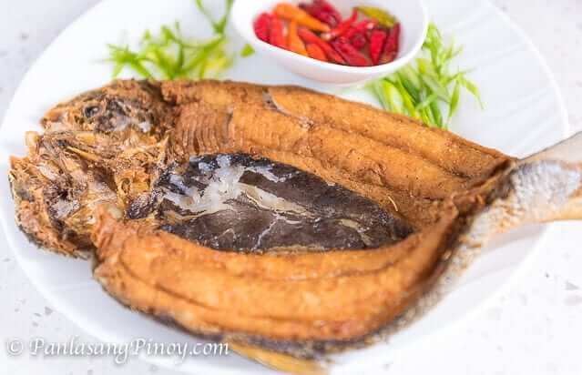

Sinigang Baboy

Sinigang na Baboy is a sour soup with pork ribs, vegetables, and tamarind-flavored broth. It's hearty, tasty, and perfect for cold weather.
Ingredients
- Pork
- Tomatoes
- Fish Sauce
- Gabi
- Radish
- Vegetables
- Finger chili peppers
Instructions
- Wash tamarind pods under cold, running water to remove any grit or dirt from the skins.
- Boil tamarind pods in water and extract the juice by mashing them.
- Add the tamarind juice to the pot.
- Cook the pork, add vegetables and spices.
- Simmer until pork is tender. Serve hot.
Butter Shrimp
Garlic Butter Shrimp is a super easy dish to make. This recipe shows how to cook this beloved dish the Filipino way.
Ingredients
- 2 lbs shrimp
- 2 tablespoons parsley
- 1/4 cup butter
- 1 head garlic
- 1 cup lemon lime soda
- 1 teaspoon lemon juice
- Salt and pepper to taste
Instructions
- Marinate the shrimp in lemon soda for about 10 minutes.
- Melt the butter in a pan and sauté garlic until light brown.
- Stir-fry shrimp until it turns orange.
- Season with salt, pepper, and lemon juice. Add parsley.
- Serve hot and enjoy!
Pork Adobo

Sinigang na Baboy is a sour soup with pork ribs, vegetables, and tamarind-flavored broth. It's hearty, tasty, and perfect for cold weather.
Ingredients
- 1 kg chicken or pork (or a combination)
- 1/2 cup soy sauce
- 1/4 cup vinegar
- 1/4 cup water
- 6 cloves garlic, minced
- 2 bay leaves
- 1 tsp black peppercorns
- 2 tbsp cooking oil
- Salt and pepper to taste
Instructions
- In a bowl, combine the soy sauce, vinegar, garlic, bay leaves, and peppercorns. Add the meat and marinate for at least 30 minutes.
- Heat the oil in a large pan over medium heat. Add the meat and cook until browned.
- Pour in the marinade and water. Bring to a boil, then reduce heat and simmer for 45 minutes, or until the meat is tender.
- Adjust seasoning with salt and pepper as needed. Serve with rice
Lumpiang Gulay
Sinigang na Baboy is a sour soup with pork ribs, vegetables, and tamarind-flavored broth. It's hearty, tasty, and perfect for cold weather.
Ingredients
- 1 cup shredded carrots
- 1 cup shredded cabbage
- 1/2 cup bean sprouts
- 1/2 cup diced tofu or cooked pork (optional)
- 2 cloves garlic, minced
- 1 tbsp soy sauce
- 1 tsp salt
- 1/2 tsp pepper
- Lumpia wrappers
- Cooking oil for frying
Instructions
- In a pan, heat oil and sauté garlic until fragrant. Add the carrots, cabbage, and bean sprouts (and tofu or pork if using). Cook until vegetables are tender.
- Season with soy sauce, salt, and pepper.
- Allow the filling to cool. Place a small amount on each lumpia wrapper and roll tightly, sealing the edges with a bit of water.
- Heat oil in a pan and fry the rolls until golden brown and crispy. Drain on paper towels. Serve with dipping sauce.
Chicken Fillet
Tender and juicy chicken breasts, seasoned and cooked to perfection. Ideal for a quick and healthy meal.
Ingredients
- 4 chicken breasts
- 2 tbsp olive oil
- 1 tsp garlic powder
- 1 tsp onion powder
- 1/2 tsp paprika
- Salt and pepper to taste
Instructions
- Preheat the oven to 375°F (190°C) or heat a skillet over medium heat.
- Rub the chicken breasts with olive oil and season with garlic powder, onion powder, paprika, salt, and pepper.
- For oven baking: Place chicken on a baking sheet and bake for 20-25 minutes, or until cooked through.
- For skillet cooking: Cook chicken breasts for 6-7 minutes on each side, or until the internal temperature reaches 165°F (75°C).
- Let rest for a few minutes before serving.
Fried Bangus
A popular Filipino dish featuring bangus (milkfish) fried to a crispy golden brown. Often enjoyed with a side of vinegar or tomato salsa.
Ingredients
- 1 whole bangus, cleaned and gutted
- 1 cup all-purpose flour
- Salt and pepper to taste
- Cooking oil for frying
Instructions
- Pat the bangus dry with paper towels. Season inside and out with salt and pepper.
- Dredge the bangus in flour, shaking off excess.
- Heat oil in a pan over medium heat. Fry the bangus until golden brown and crispy, about 5-7 minutes per side.
- Drain on paper towels and serve with dipping sauce or salsa.
Pork Sisig

Sinigang na Baboy is a sour soup with pork ribs, vegetables, and tamarind-flavored broth. It's hearty, tasty, and perfect for cold weather.
Ingredients
- 500g pork belly or face, boiled and chopped
- 1 onion, finely chopped
- 2 cloves garlic, minced
- 2-3 green chili peppers, chopped
- 2 tbsp soy sauce
- 2 tbsp calamansi or lemon juice
- 1 egg (optional)
- Salt and pepper to taste
Instructions
- Heat oil in a pan and sauté garlic until golden. Add the onions and chili peppers, cooking until softened.
- Add the chopped pork and cook until slightly crispy. Season with soy sauce, calamansi juice, salt, and pepper.
- If using, beat the egg and stir it into the pork mixture, cooking until the egg is set.
- Serve hot, preferably on a sizzling plate.
Tortang Talong
A Filipino eggplant omelet where grilled eggplants are combined with beaten eggs and cooked until golden brown. Simple yet flavorful.
Ingredients
- 2 medium eggplants
- 3 eggs, beaten
- 1/4 cup onions, finely chopped
- 1/4 cup tomatoes, finely chopped
- Salt and pepper to taste
- Cooking oil
Instructions
- Grill or broil the eggplants until the skin is charred and the flesh is soft. Peel and mash the eggplants with a fork.
- Heat oil in a pan and sauté onions and tomatoes until soft.
- Add the mashed eggplant to the pan, mixing well. Season with salt and pepper.
- Pour the beaten eggs over the eggplant mixture and cook until the eggs are set and the bottom is golden brown.
- Flip and cook the other side. Serve with rice.
Kare-Kare

A rich Filipino stew made with oxtail, tripe, and vegetables in a thick peanut sauce. Often served with bagoong (fermented shrimp paste) on the side.
Ingredients
- 1 kg oxtail, cut into pieces
- 1/2 kg tripe, cleaned and cut into pieces
- 2 tbsp annatto seeds (for coloring)
- 1/2 cup peanut butter
- 2 tbsp rice flour
- 1/4 cup soy sauce
- 2 tbsp shrimp paste (bagoong)
- 1/2 cup vegetables (eggplant, string beans, bok choy)
- Salt and pepper to taste
Instructions
- Boil oxtail and tripe in water until tender. Remove and set aside.
- In a pan, sauté annatto seeds in oil to extract color. Remove seeds and add the boiled meat.
- Stir in peanut butter, rice flour mixed with a little water (to thicken), and soy sauce. Cook until sauce thickens.
- Add vegetables and cook until tender. Season with salt and pepper.
- Serve with bagoong on the side.
Siomai
Filipino-syle dumplings filled with ground pork, shrimp, and vegetables, seasoned with soy sauce and spices. Steamed to perfection and often served with a dipping sauce.
Ingredients
- 500g ground pork
- 100g shrimp, finely chopped
- 1/2 cup minced carrots
- 1/4 cup minced green onions
- 1/4 cup soy sauce
- 1 tsp sesame oil
- 1/2 tsp salt
- 1/2 tsp pepper
- Siomai wrappers
Instructions
- In a bowl, mix ground pork, shrimp, carrots, green onions, soy sauce, sesame oil, salt, and pepper.
- Place a spoonful of filling in the center of each siomai wrapper and fold the edges to form a dumpling.
- Arrange the siomai in a steamer lined with parchment paper. Steam for 15-20 minutes, or until cooked through.
- Serve with a dipping sauce made from soy sauce, calamansi, and chili peppers.